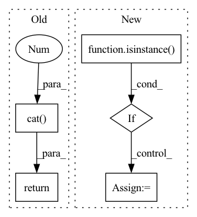

Pattern ID :1781

Before Change
warnings.warn("YOLO always returns a (outputs, features) tuple in scripting")
return (torch.cat(z, 1), x)
else:
return self.eager_outputs(torch.cat(z, 1), x)
@torch.jit.unused
def eager_outputs(self, outputs: Tensor, features: Tensor):
After Change
x[i] = x[i].view(bs, self.na, self.no, ny, nx).permute(0, 1, 3, 4, 2).contiguous()
if not self.training: // inference
if not isinstance(self.stride, Tensor):
self.stride = torch.tensor(self.stride, device=device)
if self.grid[i].shape[2:4] != x[i].shape[2:4]:
self.grid[i] = self._make_grid(nx, ny).to(device)
In pattern: SUPERPATTERN
Frequency: 3
Non-data size: 5
Instances
Fragment ID: 6911571
Project Name: zhiqwang/yolov5-rt-stack
Commit Name: 6351078c9c31b3bc74c9c550a35bed355d8ef79f
Time: 2020-10-05
Author: zhiqwang@outlook.com
File Name: models/yolo.py
M Class Name: Detect
N Class Name: Detect
M Method Name: forward(2)
N Method Name: forward(2)
M Parent Class: nn.Module
N Parent Class: nn.Module
M File Name: models/yolo.py
N File Name: models/yolo.py
M Start Line: 54
M End Line: 75
N Start Line: 52
N End Line: 71
'>
Before Change
if self.outermost:
return self.model(x)
else: // add skip connections
return torch.cat([x, self.model(x)], 1)
After Change
return_feats = feats + [output]
for layer in self.model[1:]:
if isinstance(layer, UnetSkipConnectionBlock):
output, return_feats = layer(output, return_feats)
else:
output = layer(output)
'>
Fragment ID: 6911570
Project Name: jolibrain/joligan
Commit Name: 9f1109e5b2dc49370abca391e67ab0a1de845b6e
Time: 2022-06-16
Author: pierre-nicolas.suau@jolibrain.com
File Name: models/modules/unet_architecture/unet_generator.py
M Class Name: UnetSkipConnectionBlock
N Class Name: UnetSkipConnectionBlock
M Method Name: forward(3)
N Method Name: forward(2)
M Parent Class: nn.Module
N Parent Class: nn.Module
M File Name: models/modules/unet_architecture/unet_generator.py
N File Name: models/modules/unet_architecture/unet_generator.py
M Start Line: 152
M End Line: 155
N Start Line: 171
N End Line: 184
'>
Before Change
)
x0 = torch.cat(
[x, pers0.permute(1, 0, 2).reshape(pers0.shape[1], -1)], 1)
if self.dim1_flag:
// Dim 1 computations.
pers1_reshaped = pers1.permute(1,0,2).reshape(pers1.shape[1],-1)
pers1_mask = ~((pers1_reshaped==0).all(-1))
nodes_idx_dim1 = edge_index[:,pers1_mask]
x0_dim1 = torch.cat(
[ x[nodes_idx_dim1[0,:],:], x[nodes_idx_dim1[1,:],:], pers1_reshaped[pers1_mask] ], 1)
x_dim1 = self.dim1_fn(x0_dim1, edge_slices, mask = pers1_mask)
else:
x_dim1 = None
for layer in self.set_fn0:
if isinstance(layer, DeepSetLayer):
x0 = layer(x0, batch)
else:
x0 = layer(x0)
// Collect valid
// valid_0 = (pers1 != 0).all(-1)
return x + self.bn(x0), x_dim1
class FakeSetTopoLayer(nn.Module):
After Change
pers1_mask = ~((pers1_reshaped == 0).all(-1))
x1 = pers1_reshaped[pers1_mask]
for layer in self.set_fn1:
if isinstance(layer, DeepSetLayerDim1):
x1 = layer(x1, edge_slices, mask=pers1_mask)
else:
x1 = layer(x1)
else:
x1 = None
'>
Fragment ID: 6911574
Project Name: borgwardtlab/togl
Commit Name: f6de25e187c5a78974edd07cec7fc20c675bbbc6
Time: 2021-02-02
Author: max.horn@bsse.ethz.ch
File Name: topognn/layers.py
M Class Name: SimpleSetTopoLayer
N Class Name: SimpleSetTopoLayer
M Method Name: forward(3)
N Method Name: forward(3)
M Parent Class: nn.Module
N Parent Class: nn.Module
M File Name: topognn/layers.py
N File Name: topognn/layers.py
M Start Line: 222
M End Line: 261
N Start Line: 238
N End Line: 270